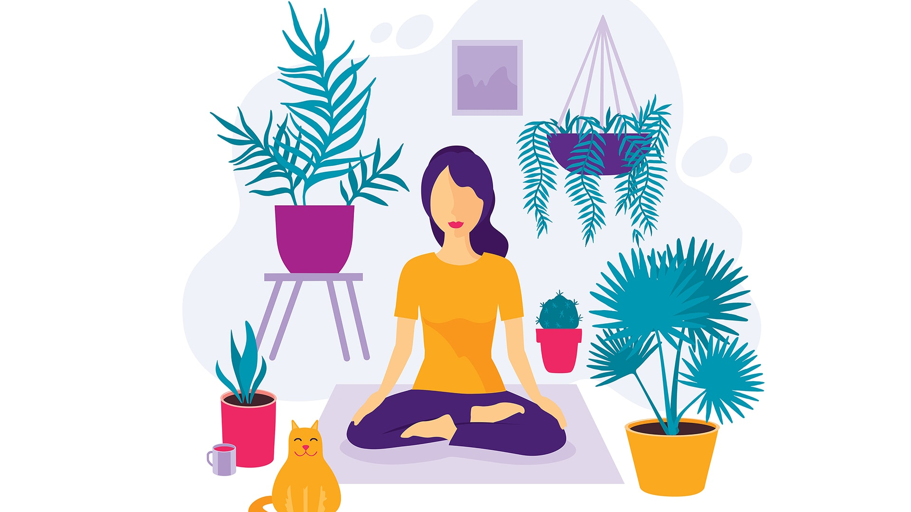
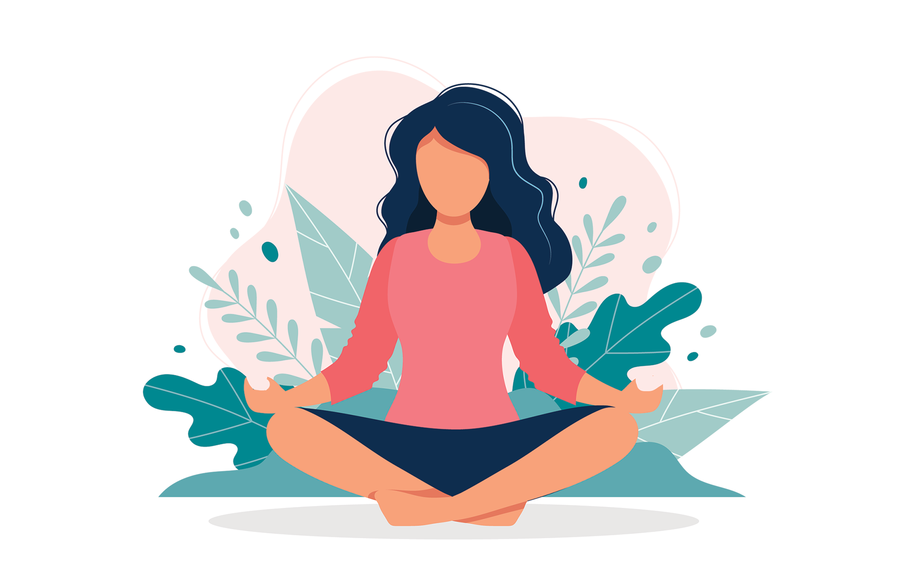

MENTAL HEALTH AWARENESS
GET MOTIVATED BY THE QUOTES GIVEN BY INSIPIRING PERSONS!!
STAY POSITIVE!!
Take your Affirmation!
Press the button to generate a Quote!


ENTERTAIN YOURSELF BY WATCHING VIDEO
MENTAL HEALTH AWARENESS VIDEO